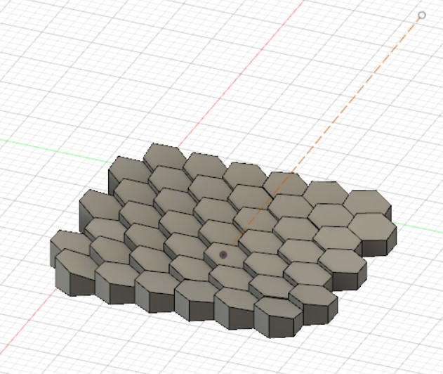
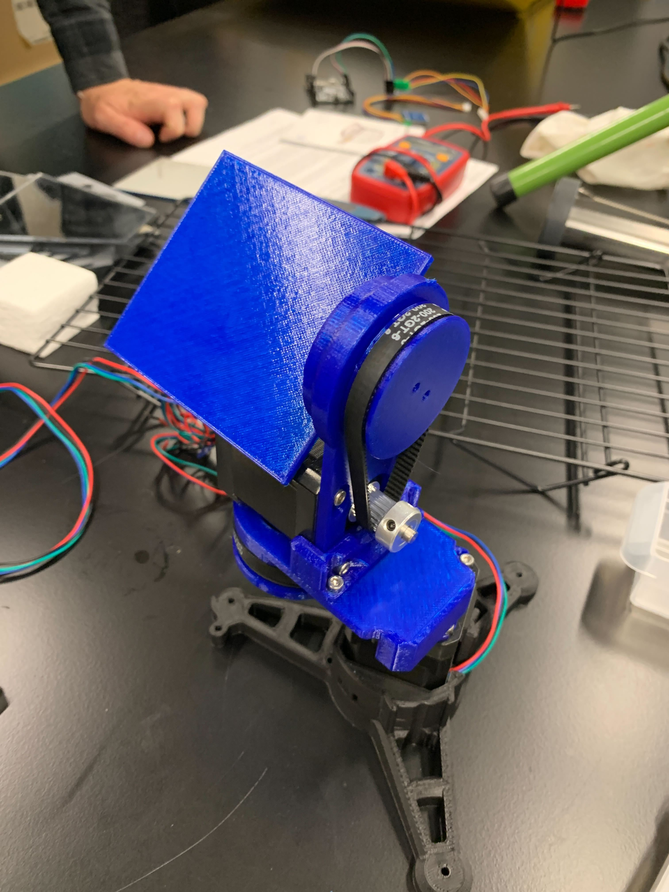
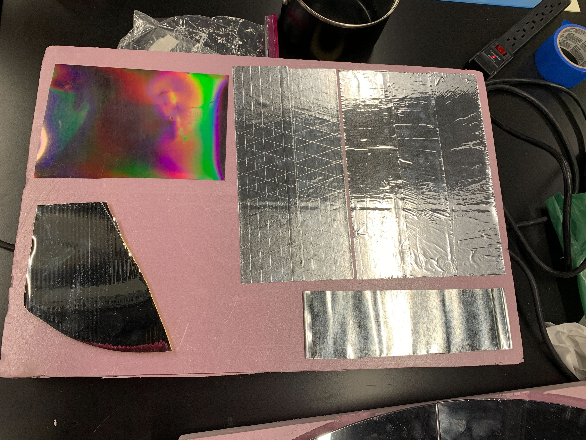
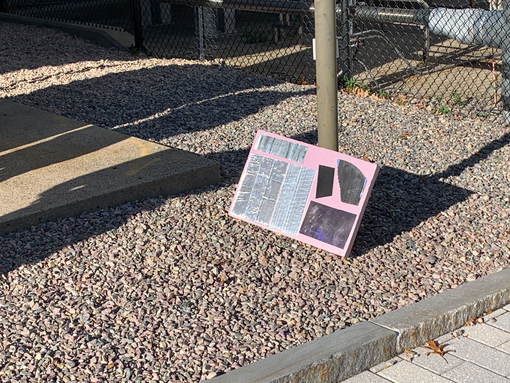
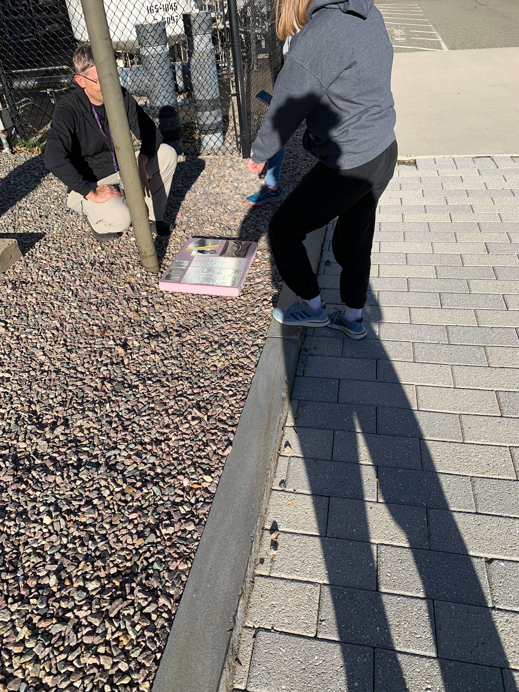
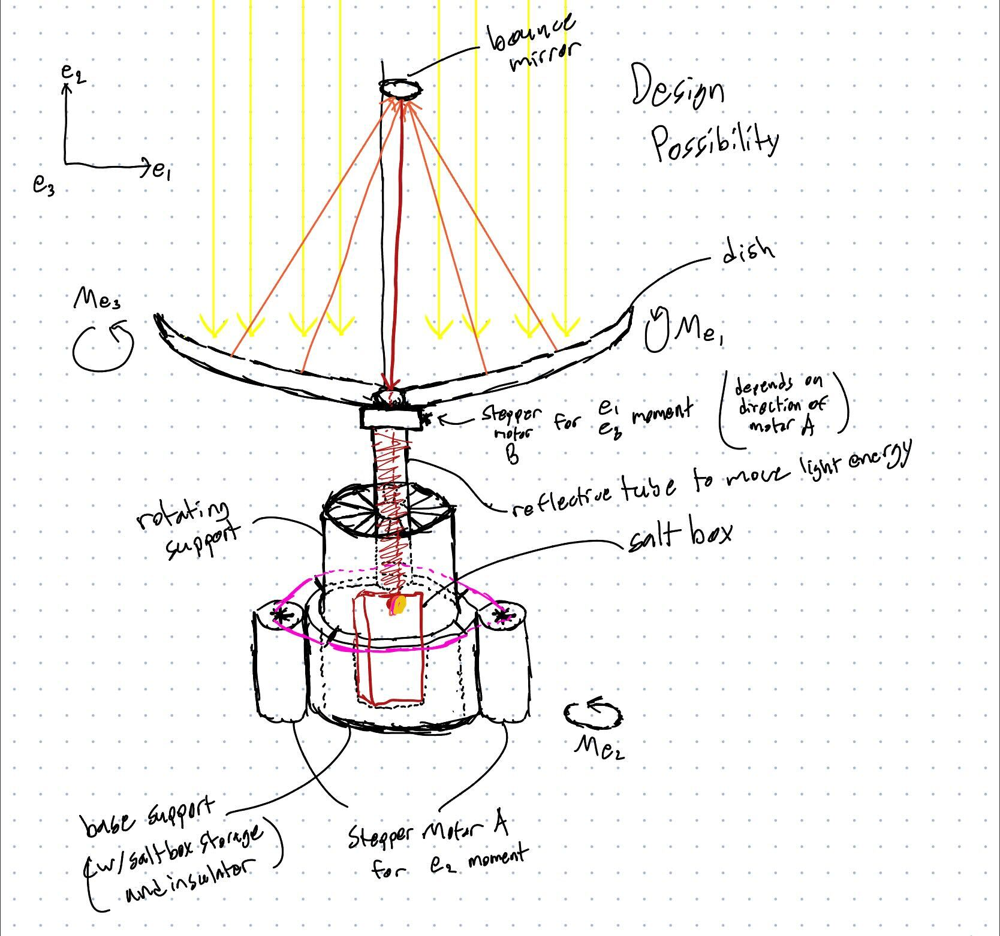

### Week 8: CAD Troubleshooting, Reflector Material Testing
Week 8 began with a discussion of the Hex Reflector Array CAD I had been working on last week. This was an in depth discussion that brought many members of the team who previously weren't working on CAD with the basics of CAD, including creating geometry and constraints.
During the discussion of the Hex array I had made, the importance of constrained geometry was especially stressed. Whenever it is known that an object should have zero degrees of freedom, it is always best practice to fully constrain that object in order to avoid strange occurences like my issues from the end of last week. After much inspection, it was concluded that the reason my reflector array was exhibiting such strange behavior was because some of the faces geometry were coplanar with the focal line we would be moving. The solution that ended up solving this issue was to just move the plane our focal line was on very slightly. This essentially put an end to the many hours spent struggling with this specific part of the CAD.

After discussing the many different aspects of Fusion 360 and creating 3D sketches, we got a chance to exam the completed pan-tilt device that had been assembled from the components we had 3D printed over the past weeks.

The prototype of the solar tracking mechanism will be attached to this, which altogether will be used to test the solar tracking mechanisms ability to follow the sun's path accurately.
Next in the week, we began to start the decision making process for how our solar cooker is actually going to look. We started off by examining some different reflective materials; those being a less rigid tape, more rigid tape, steel, thermopaperweird, acrylic backed mirror, and a piece of a cheap commercial solar cooker; in order to determine which was the most reflective. The materials were secured to a piece of foam in order to test all of them at once.

After taking this outside, we began the test by aiming the foam with the materials on it at the sun. We would then use the thermal camera device and a temperature reader to see which material was the coolest, which would mean it was reflecting the best.

However, it was a lot more simple to simply aim the foam completely facing up, or away from the sun, and aim it at the sky. THis is because the sky had a much larger area, so it would be easier to measure which reflective surface had a temperature that was closer to the temperature of the sky as opposed to the smaller sun.

The results of this testing found that the 2 reflective tapes and the piece of steel were the closet to the temperature of the sky, meaning they are the better reflectors, while the other three materials were significantly warmer, indicating they are better at storing heat energy. One thing worth noting is that the less rigid tape seemed to have more wrinkles and deformities than the more rigid tape, yet the same temperature. However, it remains to be seen whether or not these deformities affect the tapes ability to reflect actual light, as opposed to just heat.
Also worth noting is that the most effective cooker we have tested thus far, the large dish commercial cooker that boiled water, seemed to use a similar kind of reflective tape, so this may be the material we choose to continue using. The tape could provice many advantages, the main one being that it is much easier to work with than individually lasercut pieces of acrylic (tape can be cut with scissors and placed pretty easily).
Our final task of the week was to come up with some preliminary design ideas on what our solar cooker configuration should be. I decided to do a hand sketch instead of a 3D CAD model. Some features of my sketch include a center rotating "pot" that also stores the salt box, a bounce dish, and a reflective tube to direct sunlight to the salt box.

And here is a [link to the home page](../index.html).